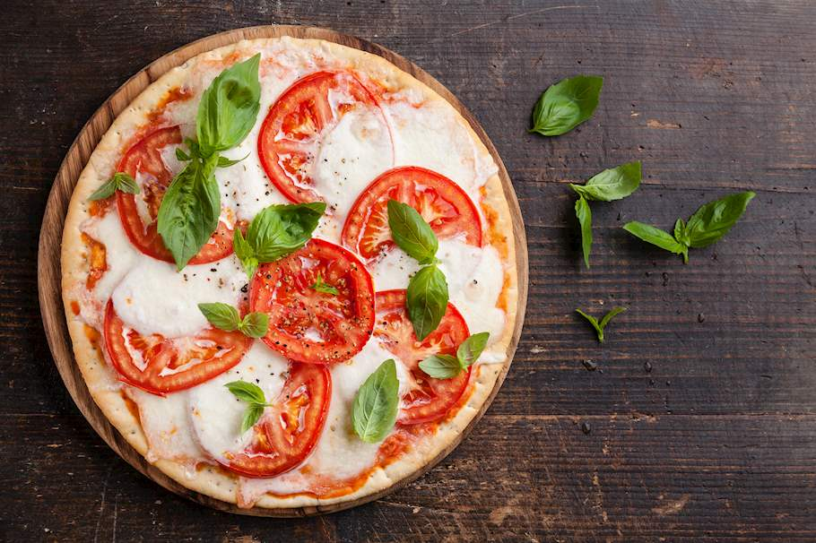
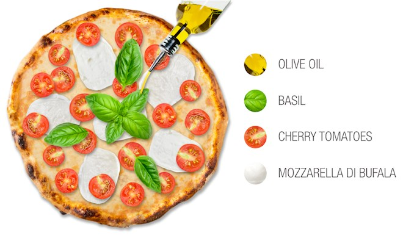

Pizza

Ingredientse

- DOUGH:
- 1 ¼ cups (150g) all-purpose flour,
plus more for shaping the dough
- ½ tsp fine sea salt
- ¼ tsp active dry yea
- ½ cups (120 ml) warm water
- TOPPING:
- olive oil, to drizzle
- 1 tsp flaky sea salt
- 1 ball of mozzarella, sliced
- 1 ½ pints (730g) of cherry tomatoes,
cut in half
- a handful of basil leaves
- balsamic reduction, to drizzle
PREPARATION
- Make a dough from the listed ingredients, then place it in a large bowl, cover it with plastic, and keep it in a
warm place until it doubles in size.
- Knead, then shape into a rectangle, and tuck the four corners of the rectangle underneath. Cover with a damp cloth and
leave it for an hour to rise.
- Place the baking tray upside down on the middle rack of the oven and set the oven to preheat to a maximum temperature one hour before you'll be
baking the pizza.
- Place the dough on a lightly floured surface and stretch out the dough by pulling out the edges, then drape the dough over your fist, place your second fist under as well, and stretch the
dough by rotating it.
- Place the dough on a lightly floured baking tray, drizzle it with olive oil and sprinkle with sea salt, then arrange the mozzarella
and the tomatoes on top.
- Bake for 10-12 minutes, then take out of the oven, sprinkle the basil leaves over the pizza, and splash some of the reduced balsamic vinegar on top.